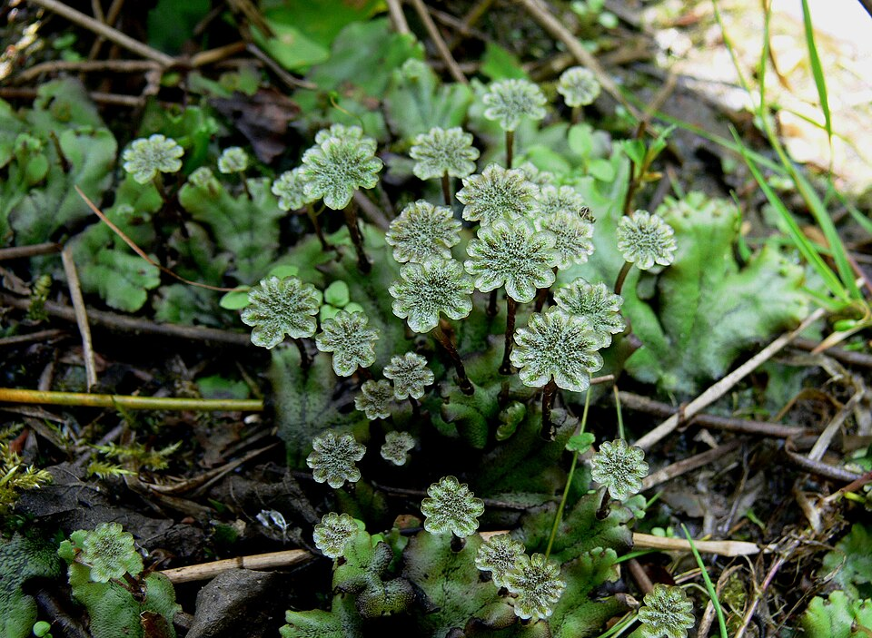

Non vasculaires
🍃
Bryophytes
Mousses, hépatiques et anthocérotes. Plantes archaïques sans racines ni vaisseaux conducteurs de sève, vivant en milieux humides et se reproduisant par spores.
- Pas de vaisseaux
- Pas de graines
- Pas de fleurs